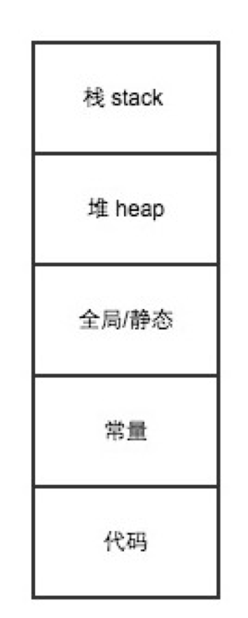
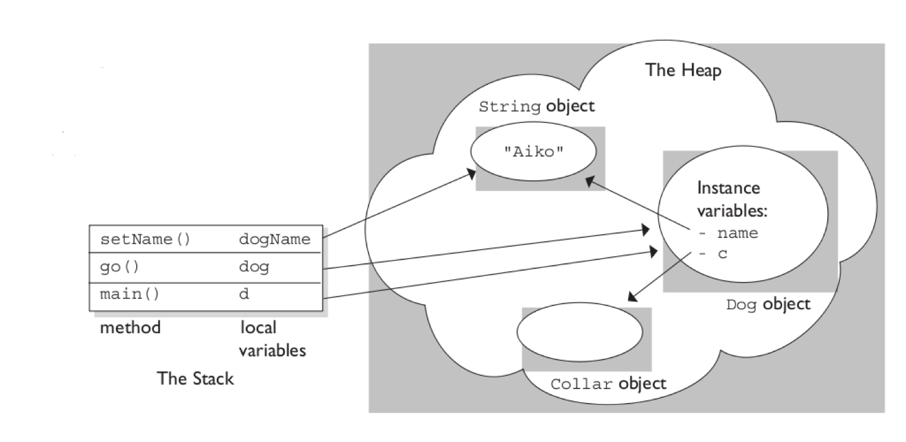
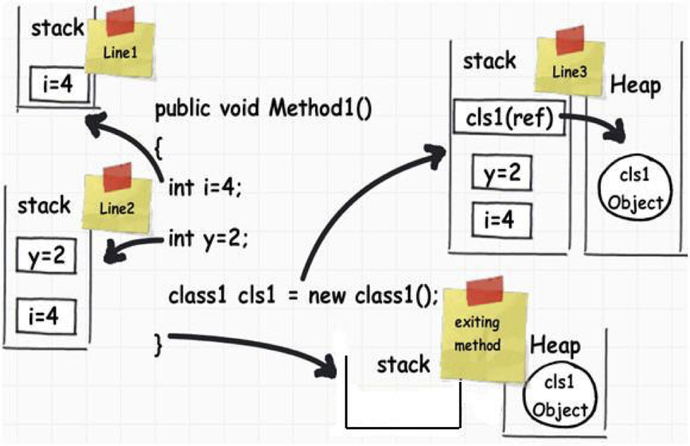
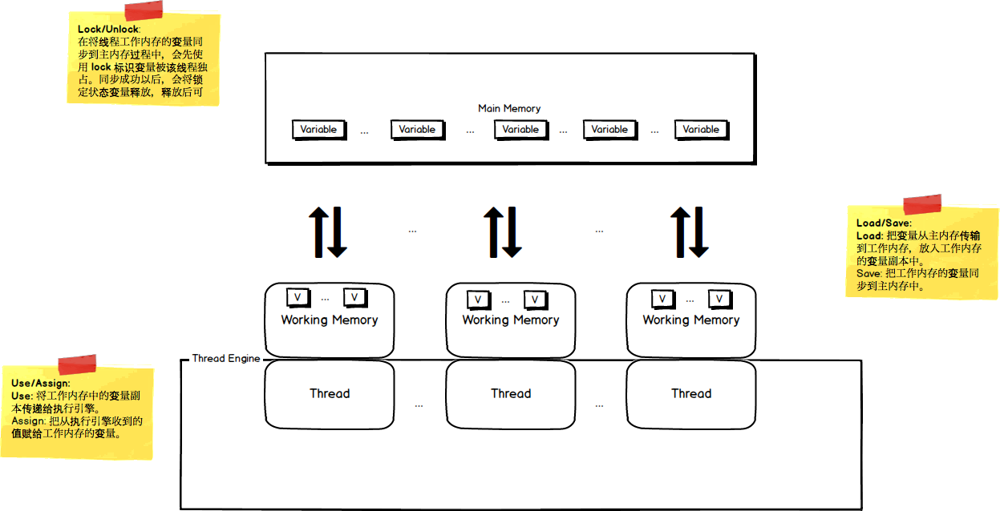

数据是所有程序处理的根本，而引用数据类型和基础数据类型是对数据的不同抽象。在我们学习过的编程语言中，都有它们的身影，然而它们的具象会有所不同。比如：
- JavaScript 基础数据类型：
undefined,null,number,boolean,string；
引用数据类型：Object,Boolean,Number,String，Array，Class。- Java 基础数据类型：
byte, short,int,long,float,double,boolean,char；
引用数据类型：Class，Array，Interface，Enum，Annotation。
虽然它们的具象表示不同，不过它们底层是一样的，或者说它们内存模式是相同的。
内存模型
据我这个非科班生的人所了解的，基础数据类型都是在栈内存中，引用数据类型都是在堆内存中。先上一张内存模型图：

- 栈区：存放函数的参数值，局部变量的值。操作方式类似于数据结构中的栈，编译器自动分配和释放。
- 堆区：用于存放引用类型对象，或者说由
new创建的对象。- 全局区：用于存储全局变量和静态变量。
- 常量区：存放常量，程序结束后由系统释放。
- 代码区：存放函数体的二进制代码。
栈内存和堆内存
在对模型有大概的了解之后，那么如何和代码进行映射呢？接着上图(一图顶千言)：

如图所示，左边的是栈内存，右边的堆内存。按照栈的操作方式，程序的执行顺序：main() --> d.go() --> dog.setName()。每个方法都有局部变量(d,dog,dogName)，也存储在栈内存中。每个局部变量都指向堆内存一个引用类型对象。
在上一段伪代码(C#)：
|
|
代码逻辑很简单，都是赋值操作。在栈和堆中又是如何反应的？上图：

图中演绎了变量在栈内存和堆内存中的生命周期。执行 int i = 4后，i=4分配到栈内存，同理y=2也被分配到栈内存中，按照栈的特性，先入后出，所以y=2会在i=4上面。
当执行class1 cls1 = new class1(), 局部变量 cls1 会被堆栈，同时指向堆内存中的引用类型创建的内存空间。当方法执行结束后，栈内存中的变量所占用的内存空间会被释放，而堆内存中占用的内存空间，会被 GC 回收。
多线程之间内存关系
多线程之间共享堆内存，每个线程都有Thread Local Storage 和 私有的栈内存。由于多线程之间是共享堆内存的，所以一个线程对一个共享变量的修改对另一个线程是可见的。也就是说，在一个线程中对共享变量修改后，要在其它线程能够得知共享变量的变化，展现内存可见性的特性。

写在最后：掌握如何分析变量是在栈内存和堆内存，可以有利于更好的写性能高的并发程序，理解为什么需要锁的根本原因。